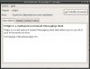
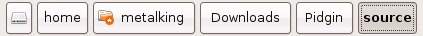

Ne vous est-il jamais arrivé de vouloir télécharger un programme, et de tomber sur un fichier bizarre du genre fichier.tar.bz2 dont vous ne savez absolument pas quoi faire ? :o Si c'est votre cas, alors ce tuto est fait pour vous !
Nous allons aborder les différents aspects de la compilation de programmes sous GNU/Linux, et en particulier avec la distribution Ubuntu (que j'utilise). Sur ce, je vous souhaite une agréable lecture. ;)
Les paquets Debian, ou l'art d'installer simplement
Pour commencer, et avant de nous plonger dans de sombres lignes de commande :D , intéressons-nous aux autres possibilités qui sont offertes pour installer un programme. La plupart des logiciels actuels sont disponibles sous une forme qu'on appelle Paquet Debian, et qui simplifie grandement l'installation de ceux-ci.
Les paquets d'installation portent l'extension .deb qui les rend facilement reconnaissables. Cependant, la plupart du temps, vous ne verrez pas ces fichiers, car ils sont automatiquement téléchargés par Synaptic, le programme qui fait toute la magie d'Ubuntu, en permettant, d'un simple clic, d'installer de nombreux logiciels ! :)
Synaptic, le clic magique :magicien: (et ça rime, en plus)
Pour installer des programmes sous Ubuntu, en ligne de commande (aussi désigné par le mot console ou terminal), on utilise la commande apt-get install. Cependant, certains utilisateurs fuient comme la peste ce pauvre terminal et préfèrent les interfaces graphiques. :p
Sous ce mot barbare se cache un principe très simple : un ensemble de boutons, listes, zones de texte qui permettent de transformer les actions de votre souris et clavier en lignes de commande compréhensibles pour l'ordinateur. :)
Ainsi, Synaptic est l'interface graphique de la commande apt-get.
Veuillez excuser ce jeu de mots plus que douteux, mais j'étais obligé de le sortir, quand même. :p
Lorsque vous désirez installer un programme, mais que ce dernier ne se trouve pas dans les dépôts de votre Synaptic, et que l'auteur du programme ne met à disposition rien d'autre que le code source, il vous reste peut-être encore un espoir de trouver un paquet Debian du logiciel. Et ce dernier espoir a un nom : Get-Deb.net.
Sur ce site, vous trouverez des dizaines de logiciels pré-compilés en paquets Debian, et téléchargeables très simplement. :) Pour savoir comment installer les fichiers que vous obtiendrez, direction la section suivante ! ;)
Installateur de paquets GDebian
Précédemment, je vous disais que vous n'auriez presque jamais affaire aux fichiers .deb. Mais imaginons que ce soit le cas (après un download sur GetDeb.net, par exemple), que faire ? o_O  Apparence de GDebian Eh bien on a pensé à tout ! Ubuntu dispose par défaut d'une application nommée Installateur de paquets GDebian qui nous permet d'installer graphiquement les paquets debian .deb ! ^^
Normalement, c'est l'application par défaut lorsqu'on choisit d'ouvrir un fichier .deb, vous n'aurez donc rien d'autre à faire que de double cliquer sur votre fichier, puis de confirmer en cliquant sur Installer le paquet !
Que faire, dans ces cas-là ???
Il va falloir compiler le programme ! :diable: (Oh god, no !) Rassurez-vous, il n'y a rien de bien sorcier là-dedans, et nous allons aborder ce sujet de suite. ^^
Vous voici dans l'impasse. Vous n'avez pas trouvé de paquet Debian, mais vous désirez plus que tout le logiciel dont vous ne pouvez avoir que le code source. :(
Pas de problème : si on a la source, on peut "refabriquer" le programme. Cette opération s'appelle "compilation". Pour compiler un programme, le plus simple est encore de passer par le terminal (mais oui, cette console où l'on écrit des lignes de commande).
Premièrement, il nous faut un code source, pour avoir quelque chose à compiler (ça paraît assez logique :lol: ).
Je vous propose d'obtenir une source afin de suivre en direct le tutoriel (par exemple, celle de Pidgin, un logiciel de messagerie instantanée, qui fait suite à Gaim. Elle est disponible ici).
Étape 1 : l'extraction
Une fois l'archive téléchargée, il va falloir l'extraire dans un dossier de votre choix (vous devez cependant savoir où il se situe, et donc connaître son chemin :) ). Ubuntu propose par défaut un gestionnaire d'archives, il vous suffit donc de faire un clic droit sur votre archive .tar.bz2, puis de cliquer sur Extraire ici, ou alors de l'ouvrir en double-cliquant, puis de choisir Extraire pour définir l'emplacement d'extraction. Les .tar.bz2 fonctionnent un peu comme les .zip et autres .rar, ça ne devrait donc pas poser trop de problèmes pour l'instant. ;)
Étape 2 : terminal et positionnement dans le dossier
L'extraction effectuée, il faut maintenant lancer un terminal. Pour ce faire, allez dans le menu Applications -> Accessoires -> Terminal (pour Ubuntu). Une fenêtre s'ouvre, laissant appraître ce texte :
compte@votre_ordinateur:~$
C'est donc dans cette fenêtre que se dérouleront la plupart des actions dans la suite du tuto. En tant que linuxien, de toute manière, vous ne couperez pas à la console, elle fait partie de l'âme de GNU/Linux, si l'on peut dire. ^^
Pour commencer l'installation, il va falloir indiquer à cette fameuse console qu'on se situe dans le dossier du programme (que vous devriez vous rappeler ;) ). On va utiliser la commande cd (pour Change Directory, ou changer de répertoire en français). Elle s'utilise comme suit :
compte@votre_ordinateur:~$ cd /chemin/de/votre/répertoire
Il faut naturellement remplacer /chemin/de/votre/répertoire par le répertoire effectif sur votre ordinateur. ^^ Les chemins sous Linux sont souvent ainsi : /home/votre_compte/Dossier1/sous-dossier. Pour moi, ce sera par exemple : /home/metalking/Downloads/Pidgin/source. Pour votre cas, vous pouvez connaître le chemin en vous rendant dans le dossier de la source avec l'explorateur de fichiers, puis en consultant la zone en haut de la fenêtre (voir image ci-dessous). Chaque espace entre les boutons représente un / (slash).

Vous voici dans le bon répertoire, et vous pouvez remarquer que la console vous l'indique entre le ~ et le $, sans la partie du début (/home/metalking) qui est considérée par défaut :
Vous allez voir défiler une série d'informations à l'écran, et ensuite, ça va s'arrêter. Deux choix possibles :
on vous indique que tout est OK, le programme est configuré, et l'on peut passer à la suite ;
la console indique une erreur, et il va falloir installer d'autres librairies pour continuer la configuration.
Normalement, avec Pidgin, c'est la deuxième solution qui apparaît. Il nous manquera quelques headers de développement, comme GTK+ 2.0 dev, etc. Au lieu d'installer une à une les librairies manquantes, et de relancer ./configure entre chacune, on va les installer toutes en même temps :) (chose que vous ne pourrez pas forcément faire avec un programme que vous ne connaissez pas).
Donc, on a reçu un message du genre : "Error: No package 'libgtk2.0-dev' found" (ce n'est pas exactement ça, mais je ne me souviens plus du message original). Il va falloir installer cette fameuse librairie. Soit on le fait par Synaptic, en utilisant la fonction de recherche, soit on utilise apt-get et on n'a même pas besoin de changer de fenêtre. :D
Comme c'est un tutoriel, je vais vous donner directement toutes les librairies à installer pour Pidgin. Lancez la commande suivante dans votre console :
C'est un peu long, je vous l'accorde, mais ça a l'avantage de tout installer d'un coup.
<information>La commande sudo indique que vous effectuez l'action en mode Super-Utilisateur, et que vous avez tous les droits. Pour faire ceci, vous devez être connecté avec un compte utilisateur qui est présent dans le fichier /etc/sudoers et donner votre mot de passe (il vous sera demandé juste après que vous ayez lancé la commande). Généralement, il s'agit d'un compte administrateur. Pour plus d'informations sur cette commande, tapez ceci dans la console :
compte@votre_ordinateur:~$ man sudo
Ceci est valable pour toute commande fondamentale de linux. Taper le mot-clé man suivi du nom de la commande livre des informations sur celle-ci (man = manuel).
Lorsque vous êtes capables de lancer la commande ./configure sans obtenir d'erreur, vous pouvez passer à l'étape suivante.
Étape 4 : Make
La traduction littérale de ce mot serait : "Faire" ou "Fabriquer". C'est précisément ce que nous allons faire, nous allons fabriquer les fichiers nécessaires à l'installation.
La commande qui fait ceci, je vous laisse deviner ^^ :
compte@votre_ordinateur:~/Downloads/Pidgin/source$ make
C'est tout bête, mais indispensable.
À nouveau, une série de commandes incompréhensibles pour les humains défile à l'écran. Lorsque l'activité cesse (le texte compte@votre_ordinateur:~/Downloads/Pidgin/source$ doit être revenu sur la dernière ligne), on peut passer à la dernière étape.
Normalement, make ne pose pas de problème, c'est surtout ./configure qui fait le pénible. :lol:
Étape 5 : le retour de make : 'sudo make install'
Comme vous pouvez le voir dans le titre, la prochaine commande devra être lancée en mode Super-Utilisateur, grâce au préfixe sudo. De plus, il faudra dire à make de faire l'installation, grâce au paramètre install.
Tapez donc, dans votre terminal :
compte@votre_ordinateur:~/Downloads/Pidgin/source$ sudo make install
On vous demande votre mot de passe administrateur : vous l'indiquez, puis appuyez sur la touche Entrée de votre clavier. Ensuite, il faut juste attendre la fin de l'activité, pour s'assurer que le programme est installé correctement. Là aussi, normalement, il n'y a pas d'erreur particulière.
Voilà, vous avez compilé votre premier programme ! Bravo !
J'espère que ce tutoriel vous aura plu, et que vous savez maintenant compiler des codes source sans aide, comme des grands !
Résumé
Extraction de l'archive contenant la source.
Positionnement dans le dossier où l'on a décompressé, grâce à la commande cd, suivie du chemin.
Commande ./configure pour paramétrer l'installation, et installation des dépendances si nécessaire.
Commande make, qui fabrique les fichiers d'installation.
Commande sudo make install qui installe les fichiers précédemment créés.
{kind=link}
{kind=link}